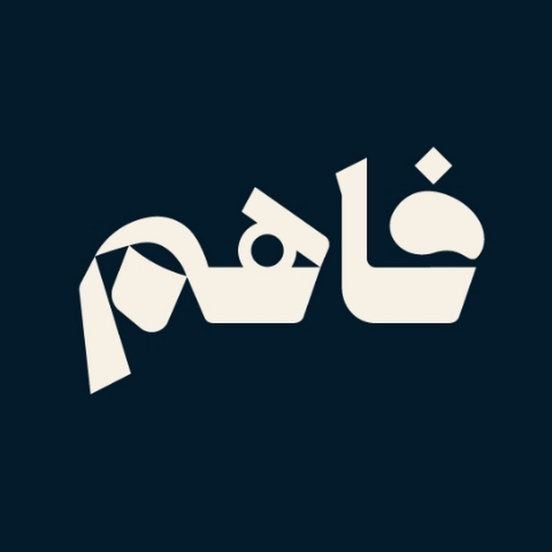
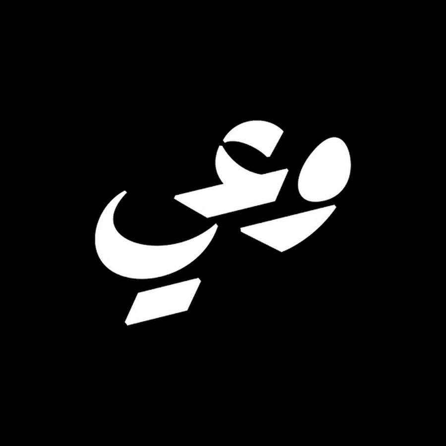
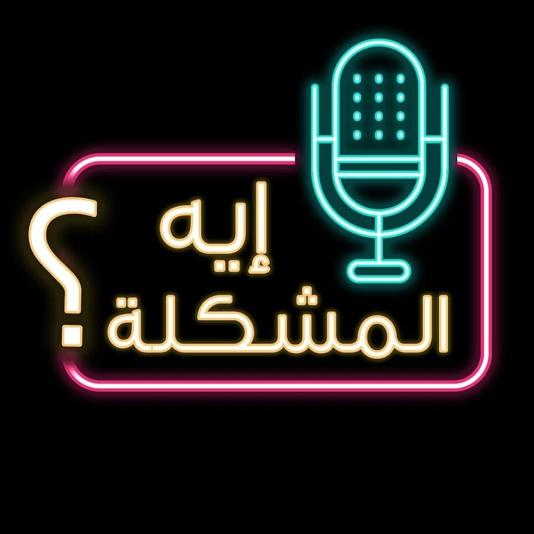
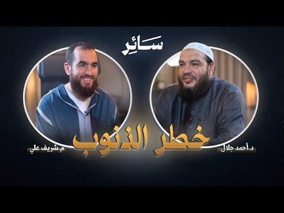
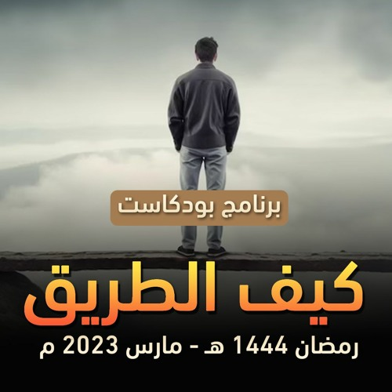
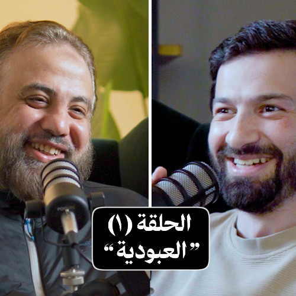

بسم الله الرحمن الرحيم
مرحبًا بك في
موقع المنهاج الإسلامي
منصتك الإسلامية الشاملة للقرآن الكريم والأحاديث النبوية الشريفة والمحاضرات الدينية وأوقات الصلاة
تصفح
منصتك الإسلامية الشاملة للقرآن الكريم والأحاديث النبوية الشريفة والمحاضرات الدينية وأوقات الصلاة
حاسب نفسك قبل أن تُحاسَب — اجلس مع نفسك كل يوم وتأمل هذه الأسئلة
اختر نوع الذكر من الأعلى







فضيلة الشيخ علاء حامد

فضيلة الشيخ سمير مصطفى

فضيلة الشيخ حازم شومان

فضيلة الشيخ علاء حامد
فضيلة الشيخ علاء حامد

فضيلة الشيخ عثمان الخميس

فضيلة الشيخ أحمد عامر

فضيلة الشيخ شريف علي